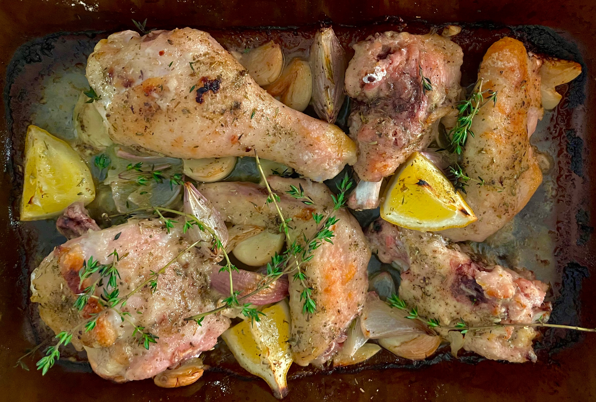

Sunday April 24, 2022

I was excited to make this recipe tonight in particular, hoping to fight away the Sunday scaries before the week starts. I was hooked by Sam Sifton's comment about the perfect dinner-party meal and appreciated the simplicity. I managed to get together a small group of friends (it helps when you live with roommates) for this evening and got to cooking late this afternoon.
The cooking process was straightforward. Instead of using bone-in thighs, I opted to break down a whole chicken instead. I incorporated a few other insights from the recipe comment thread -- increasing the amount of vermouth and doubling the number of garlic cloves. Cautious of drying out the breast meat, I basted the chicken slightly more frequently at every 15 minutes, rather than the suggested half-hour interval. I followed Melissa Clark's advice to serve the meal with a side of crispy potatoes, which came together quickly in the air fryer.